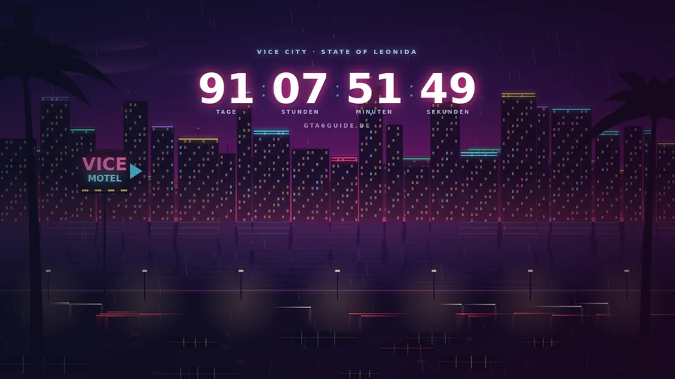

Der Countdown, der dich überall findet
APK herunterladen (v1.1.4 · 6,2 MB) Countdown für den PC
Nur für Android · kostenlos · kein Play-Store-Konto nötig
So sieht's auf dem Handy aus
Countdown auf dem Sperrbildschirm
Der Klassiker: Handy hochnehmen, Countdown sehen. Das Widget sitzt direkt über der Uhr und zeigt Tage, Stunden und Minuten bis zum 19. November – ohne dass du entsperren musst.
Tipp aufs Bild fürs nächste Motiv
Was drinsteckt
Sperrbildschirm & Homescreen
Das Countdown-Widget läuft auf beiden – Tage, Stunden und Minuten bis zum 19. November, immer im Blick.
Mehrere Styles
Eine kleine, feine Auswahl verschiedener Widgets und Wallpapers im Vice-City-Neon-Look – such dir deinen Favoriten aus.
Dein Hintergrund, unser Widget
Die Widgets funktionieren auch mit deinen eigenen Hintergründen – Familienfoto plus Neon-Countdown? Läuft.
Kostenlos & direkt von uns
Die App gibt's exklusiv hier auf gta6guide.de als APK-Download – keine Anmeldung, keine Kosten.
Installation in 2 Minuten
APKs von außerhalb des Play Stores brauchen einmalig eine Freigabe. Wähl aus, was auf dich zutrifft:
- APK herunterladen. Tipp oben auf „APK herunterladen“ – die Datei landet in deinem Download-Ordner.
- Download öffnen. Zieh die Benachrichtigungsleiste herunter und tipp auf die fertige Datei GTA6Wallpapers-v1.1.4.apk (alternativ: App „Dateien“ → Downloads).
- Installation erlauben. Android fragt beim ersten Mal nach der Berechtigung „Unbekannte Apps installieren“. Tipp auf Einstellungen, aktiviere den Schalter für deinen Browser und geh zurück. Das ist eine normale Android-Sicherheitsabfrage für Apps außerhalb des Play Stores.
- Installieren. Tipp auf Installieren. Falls Play Protect einen Hinweis zeigt: Details → Trotzdem installieren – die App stammt direkt von uns.
- Wallpaper setzen. App öffnen, Wallpaper aussuchen, als Sperr- und/oder Homescreen setzen.
- Widget hinzufügen. Halte eine freie Stelle auf dem Homescreen gedrückt → Widgets → „GTA6Guide“ auswählen und platzieren. Auf vielen Geräten (z. B. Xiaomi/Samsung) lässt sich das Widget auch auf dem Sperrbildschirm einbinden – je nach Hersteller unter Einstellungen → Sperrbildschirm → Widgets.
- APK laden (Button oben) und wie gewohnt installieren.
- Wallpaper setzen und das Countdown-Widget über die Widget-Auswahl deines Launchers platzieren.
- Sperrbildschirm: Je nach Hersteller unter Einstellungen → Sperrbildschirm → Widgets aktivieren.
Warum als APK und nicht im Play Store?
Kleine Fan-Projekte rund um geschützte Marken haben es im Play Store schwer – deshalb verteilen wir die App direkt hier. Lade die Datei ausschließlich von gta6guide.de herunter; nur dann ist sie unverändert von uns. Updates kündigen wir per Push und Newsletter an – neue Versionen findest du immer auf dieser Seite.
Der dynamische Hintergrund-Countdown
Zwei animierte Live-Wallpapers mit laufendem Countdown – Regen, Verkehr und Neonlicht in Vice City oder Sonnenuntergang am Vice Beach. Beide laufen als einzelne HTML-Datei in jedem modernen Browser und lassen sich als echter Desktop-Hintergrund einbinden.

Cinematic, ruhiger Look

Regen, Verkehr, Polizeihelikopter
So wird daraus dein Desktop-Hintergrund
- Lively Wallpaper installieren. Kostenlos und quelloffen – über den Microsoft Store (Suche nach „Lively Wallpaper“) oder von rocksdanister.github.io/lively.
- Wallpaper-Datei herunterladen. Oben auf „Herunterladen“ tippen und die HTML-Datei an einem festen Ort speichern (z. B. Dokumente\Wallpapers) – Lively greift später darauf zu.
- In Lively hinzufügen. Auf das große + klicken, dann Browse → die heruntergeladene HTML-Datei auswählen. Alternativ die Datei einfach ins Lively-Fenster ziehen.
- Als Hintergrund setzen. Auf die neue Kachel doppelklicken. Bei mehreren Monitoren wählst du oben aus, für welchen Bildschirm es gelten soll.
- Feinschliff. In den Lively-Einstellungen unter Performance festlegen, dass das Wallpaper pausiert, wenn ein Vollbild-Spiel läuft – so kostet es im Spiel keine Leistung.
- Datei herunterladen und an einem festen Ort speichern.
- Wallpaper Engine öffnen → Wallpaper erstellen → Web/HTML als Typ wählen.
- HTML-Datei auswählen und dem Wallpaper einen Namen geben.
- Übernehmen – das Wallpaper erscheint in deiner Bibliothek und lässt sich wie jedes andere aktivieren.
- Datei herunterladen und per Doppelklick im Browser öffnen.
- Vollbild aktivieren mit F11 – fertig ist der Countdown-Screen, ideal für einen Zweitmonitor oder als Bildschirmschoner-Ersatz.
- Standbild als Hintergrund: Die Vice-City-Night-Variante hat einen versteckten Speichern-Button. Ruf die Datei mit ?ui=1 am Ende der Adresse auf, klick auf „Als PNG speichern (4K)“ und setze das Bild klassisch über Rechtsklick auf den Desktop → Anpassen → Hintergrund.
Gut zu wissen
Beide Wallpapers rechnen den Countdown live aus dem Systemdatum aus – sie brauchen keine Internetverbindung und senden nichts nach außen. Alles ist selbst gezeichnet, es kommt kein Rockstar-Material zum Einsatz. Der Countdown lässt sich übrigens umstellen: Häng ?date=2026-12-24T00:00:00 an die Adresse an, und die Datei zählt auf ein beliebiges Datum herunter.
Kurz & knapp
Gibt's das auch für iPhone?
Die App ist aktuell Android-only. Der PC-Countdown läuft dagegen auf jedem Gerät mit Browser – auch auf dem Mac.
Was passiert nach dem Release?
Der Countdown hat seinen großen Moment am 19. November – die Wallpapers bleiben natürlich auch danach schick.
Kostet das was?
Nein. App und Wallpapers sind kostenlose Extras von GTA6Guide – genau wie die Seite selbst.